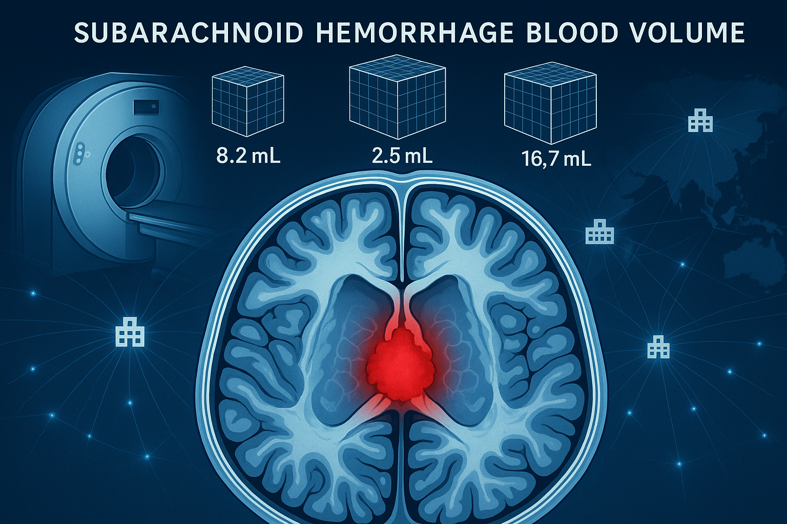

Building, validating, and deploying AI for non-contrast head CT—detecting SAH and quantifying blood volume (SAHV) to speed triage, standardize research, and scale care globally.

A multidisciplinary team advancing AI-driven SAH research
We are a multidisciplinary team of physicians (neurologists, neurosurgery, neuroradiologists), AI-ML imaging scientists that span multiple sites and continents investigating the dose-response relationship of SAHV (SAH hemorrhage Volume) on outcomes.
SAHVAI builds, validates, and deploys AI for non-contrast head CT—detecting SAH and quantifying blood volume (SAHV) to speed triage, standardize research, and scale care globally.
Advancing SAH measurement and volumetrics
We create, train, and evaluate SAHV models to identify SAH patterns quickly and reliably—even in real-world, heterogeneous scans.
From ABC/2 to automated 3D segmentation, we deliver reproducible volumes to enable dose–response research and outcome prediction.
Led by world-class researchers at Mayo Clinic
Principal Investigator
Neurocritical Care, Mayo Clinic
Co-Investigator
Radiology AI, Mayo Clinic
Co-Investigator
Computer Vision, Mayo Clinic
Co-Investigator
AI Scientist
Co-Investigator
Neurology, Neurocritical Care, Mayo Clinic
Co-Investigator, Project Manager
Neurosurgery, Mayo Clinic
Plus numerous post-doctoral students, residents, fellows, and medical students
Peer-reviewed research advancing SAH care
Journal of the American Heart Association. 2024 Oct 15;13(20):e032195
A simplified quantitative method that predicts outcomes and delayed cerebral ischemia. We derived a simplified mathematical equation over 5 SAH neuroanatomic regions and summated them into SAHV. This simplified SAHV method was comparable to a more labor and time intensive SAHV by computerized manual segmentation.
Mayo Clinic Proceedings: Digital Health. 2023
Initial collaboration with Google on AI-driven intracranial hemorrhage detection for underserved populations, laying the groundwork for SAHVAI Lab's volumetric analysis approach.
Bridging continents for better SAH research
SAHVBRazA is bridging continents between US sites and Brazil using a Consortium agreement of limited data set and deidentified data.
SAHV European and international Research Alliance — extending global collaboration in subarachnoid hemorrhage volumetrics research.
Reach out to learn more about SAHVAI Lab
Mayo Clinic
Jacksonville, Florida
Principal Investigator: W. David Freeman, MD
Email: freeman.william1@mayo.edu
Publications: PubMed Search
SAHVAI Lab is supported by generous philanthropy from
The Louis V. Gerstner Philanthropies